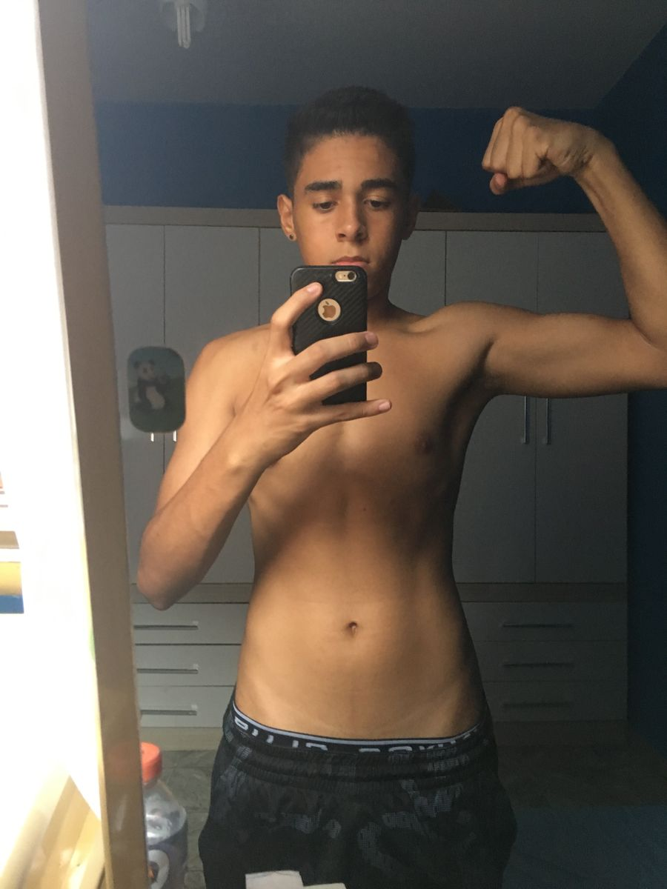
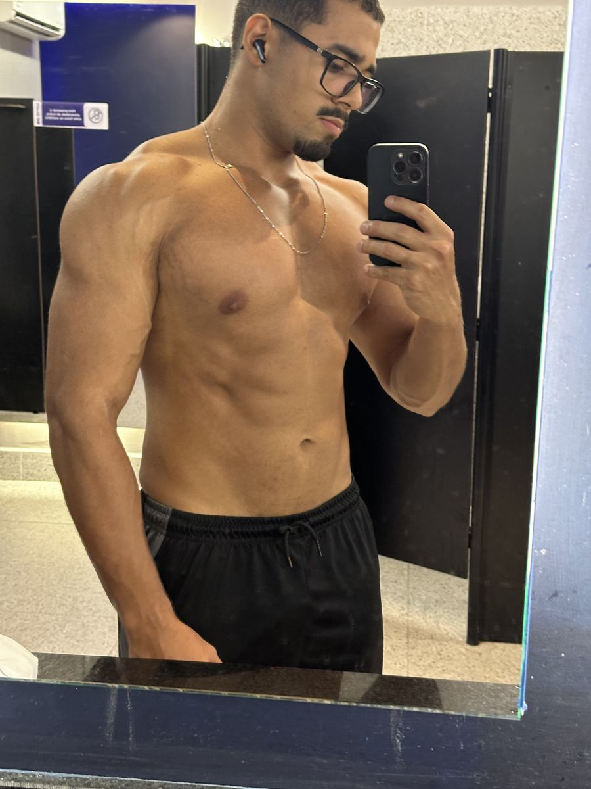

“O que me ajuda é o fato de você ajustar de acordo com a minha necessidade. Obrigado por acreditar em mim até quando eu mesmo duvido.”
AleRotina real · consistência
Relatos espontâneos de pacientes acompanhados pelo Método Atlas, com estratégia adaptada à rotina. Sem promessa milagrosa, sem foto editada.
Mensagens enviadas pelos próprios pacientes durante o acompanhamento.
“O que me ajuda é o fato de você ajustar de acordo com a minha necessidade. Obrigado por acreditar em mim até quando eu mesmo duvido.”
“Fiz exatamente o que me orientou. Já estou descostumando comer por compulsão. Acabou a fome e a vontade. O segredo é comer devagar e seguir o plano.”
“Curti demais, irmão. Muito profissional e sem rodeios. Entendeu demais meu real objetivo. 100% animado com o progresso até aqui e com o plano daqui pra frente.”
“A consulta está sendo boa, bem explicativa e detalhada. O embasamento técnico da explicação me agrada bastante também.”
“Pra mim está ótimo o atendimento, Kevin. Tudo o que preciso você sempre prepara, prestativo. Não vejo algo que esteja deixando a desejar, pra mim está tudo ok!”
Relatos individuais. Resultados variam conforme o organismo, o contexto e a adesão de cada pessoa.
Percepções que surgem de forma espontânea, de pessoas com objetivos diferentes.
Entender o motivo de cada escolha tira a ansiedade e dá segurança.
“A consulta é bem explicativa e detalhada. O embasamento técnico me agrada bastante.”— Alex Mendonça
Plano que respeita trabalho, família e compromissos não exige isolamento.
“Tudo o que preciso você sempre prepara, prestativo.”— Rubia Nascimento
Comunicação direta e plano focado no objetivo real de cada pessoa.
“Muito profissional e sem rodeios. Entendeu demais meu real objetivo.”— Afonso
Comer sem culpa e sem compulsão, com disciplina leve.
“Fiz exatamente o que me orientou. Já estou descostumando comer por compulsão.”— Welington Moraes
A relação do Kevin com nutrição, treino e composição corporal também foi construída na prática, ao longo dos anos.




Imagens do próprio profissional. Por ética profissional, não são divulgadas fotos de “antes e depois” de pacientes.
Você não precisa aceitar peso travado, cansaço e flacidez como preço da caneta. Precisa de alguém que olhe para o seu caso, te dê a direção certa e ajuste o caminho com você.